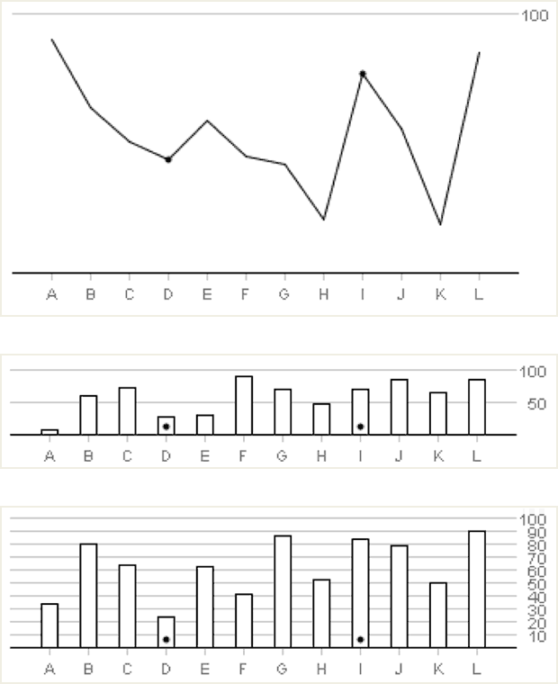

The study sought to prove the viability of Turk as a platform for “graphical perception experiments.” The study replicated the findings of prior, non-crowdsourced experiments, concluding that Turk is a viable option with many benefits.
Crowdsourcing a user-test is defined as “web workers completing one or more small tasks, often for micro-payments of $.01 to $.10 per task.” Benefits to using a crowdsourcing program such as Turk for user-testing, include cost and time benefits for the client; as well as larger sample size and more diversity among testers.
A few comments regarding the quality of answers received:
Source: Crowdsourcing Graphical Perception: Using Mechanical Turk to Assess Visualization Data, Jeffrey Heer, Michael Bostock. ACM Human Factors in Computing Systems (CHI), 203–212, 2010

Experiment varying chart type, chart height, and gridline spacing.